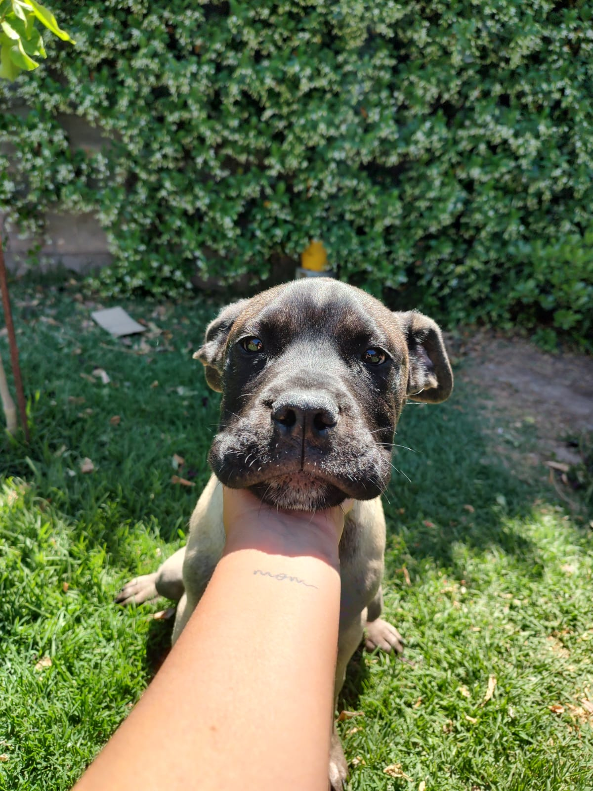
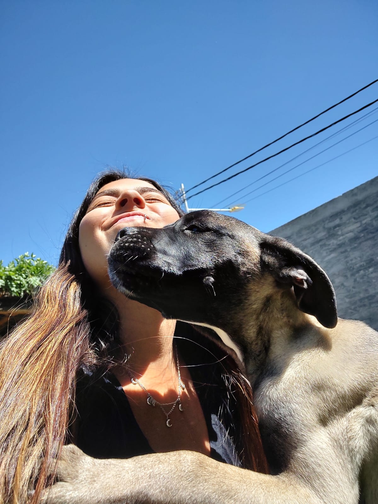
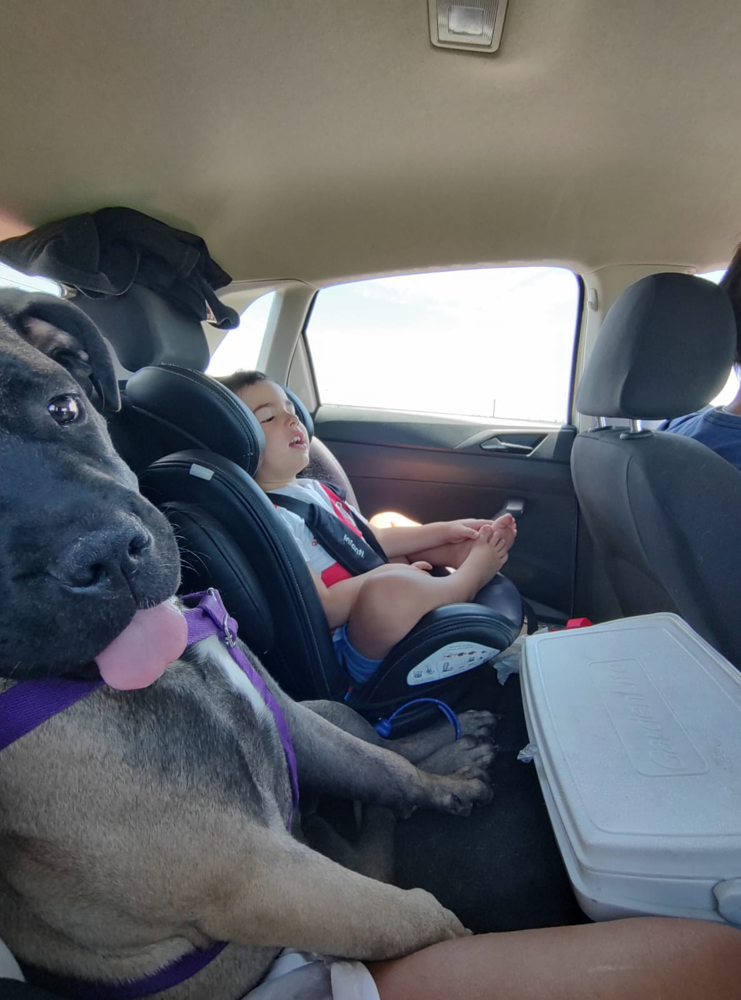
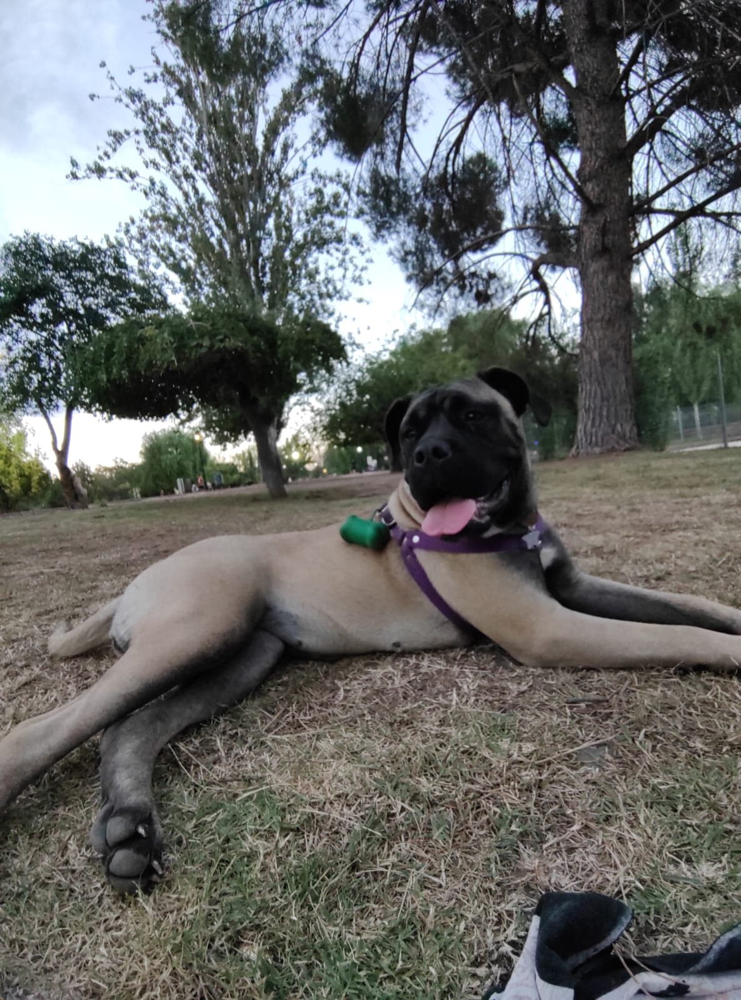
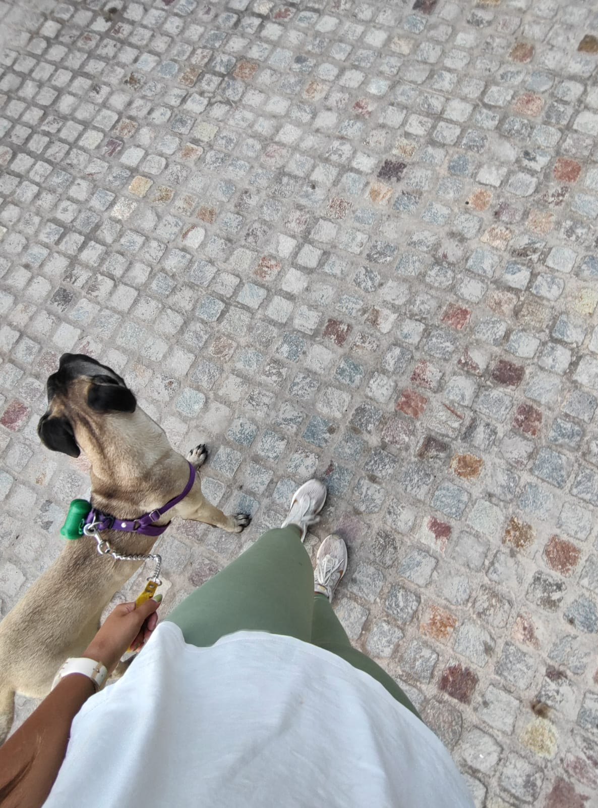

La vida de Helga
Helga es una perra Bulmastiff nacida en la provincia de Buenos Aires en el año 2024. Desde el momento en que llegó al mundo, mostró un espíritu inquieto y una personalidad vibrante que la distinguieron entre sus hermanos de camada. Su dueña, Martina Grosso, la recibió con los brazos abiertos y desde entonces han sido inseparables compañeras en todas las aventuras que la vida les ha presentado.
Desde temprana edad, Helga demostró un amor profundo por la música. Martina solía ponerle distintos tipos de música mientras realizaban sus actividades diarias, y Helga siempre respondía con entusiasmo, moviendo la cola al ritmo de las melodías. Desde el rock clásico hasta la música electrónica, Helga disfruta de todos los géneros y siempre está lista para una buena sesión de escucha.
Pero la pasión de Helga por la música no se detiene en ser simplemente una oyente. Desde cachorra, demostró un interés particular por los instrumentos musicales, especialmente la guitarra. A menudo se encuentra cerca de Martina mientras practica sus acordes, observándola con atención y ocasionalmente intentando tocar las cuerdas con su hocico. Es evidente que Helga tiene aspiraciones de convertirse en una verdadera estrella del rock algún día.
Además de su amor por la música, Helga también disfruta de los paseos al aire libre. Como buena Bulmastiff, le encanta explorar su entorno y descubrir nuevos lugares. Desde los parques de la ciudad hasta las rutas de montaña en Mendoza, Helga está siempre lista para emprender una nueva aventura junto a su fiel compañera, Martina.
A pesar de ser una perra de gran tamaño y apariencia imponente, Helga tiene un corazón gentil y cariñoso. Es leal a su dueña y siempre está dispuesta a brindarle amor y compañía en todo momento. Su energía contagiosa y su personalidad única la hacen destacar dondequiera que vaya, y no hay duda de que con su determinación y pasión, Helga está destinada a brillar como la estrella de rock que sueña ser.